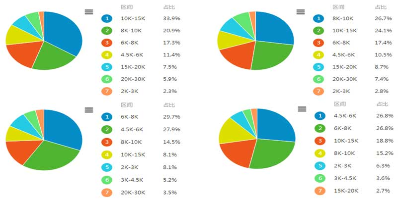

前端工程师是互联网时代软件产品研发中不可缺少的一种专业研发角色。从狭义上讲，前端工程师使用HTML、CSS、JavaScript等专业技能和工具将产品UI设计稿实现成网站产品，涵盖用户PC端、移动端网页，处理视觉和交互问题。从广义上来讲，所有用户终端产品与视觉和交互有关的部分，都是前端工程师的专业领域。
前端是一个相对比较新的行业，互联网发展早期（1995年~2005年）是没有专业的前端工程师的。随着互联网的发展，大约从2005年开始，正式的前端工程师角色被行业认可，到了2010年，互联网开始全面进入移动时代，前端工程师的地位越来越重要，前端领域的技术发展也越来越快，各种新的思想、设计模式、工具和平台都快速发展，对前端工程师的技能要求也越来越高。
近几年互联网公司前端团队每年扩张一倍，JavaScript工程师平均薪水排名在程序语言工程师收入前10:
北、上、广、杭前端工资水平:
首先，W3C制定的国际统一标准，使前端成为天生跨平台的技术载体，成为其他语言做不到的技术垄断。不管移动平台还是桌面平台，还是什么操作系统，在这里都是完全支持的。其他系统针对不同的平台，开发的成本几乎要增加一倍。因此前端也成为了开放的，跨平台的技术。
其次，前端的配合灵活多变。前端是基于浏览器的一门技术，只要浏览器有可运行的平台，前端开发就有其用武之地。所有已知的开发语言都需要依赖前端技术的开发。不难预想未来推出的后台语言，不论依照什么样的准则，它必然依赖于前端开发技术。
最后，前端开发之所以备受关注，一个主要的原因也是其良好的就业前景。与其他的技术不同，前端技术就业范围广泛。而且伴随着前端开发在国内发展速度的日益加快，国内越来越多的企业重视到了前端开发的重要作用，也因此对前端技术越发的重视。
只需要在文本编辑器里面输入一些字符，保存后打开浏览器，马上就能看到丰富的视觉效果，这就是前端的优势，你所做的努力立即就能看得见。相对于非浏览器语言死板的输入输出，Web开发在界面可见的一层要丰富多彩得多，各种颜色和特效非常吸引人，这一点吸引很多人前来学习，甚至有很多人从其他计算机语言转过来学习它。
而学过其他语言来学习前端也可以事半功倍，因为知识的正确用法是——一个领域里面的大师永远不会是另一个类似领域的菜鸟，他们一定有相似的逻辑和原理。但"知道"一件事，在知识廉价的互联网时代并不是一种有价值的能力。我们的同学千万不要像背书一样去死记硬背，而应该真正用心去学。